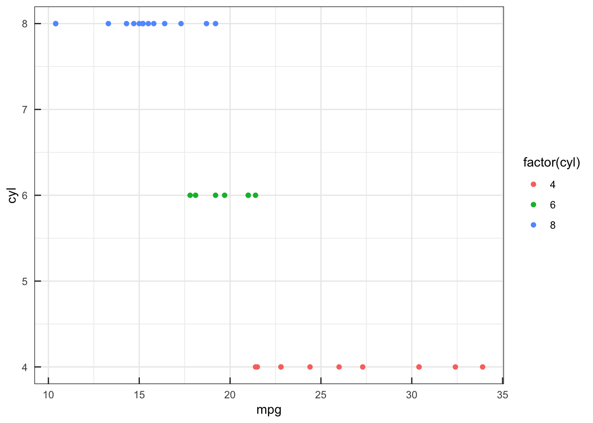

ggplot2でtickを内向きにする方法のメモ。
tickの長さを負にして、marginを2倍とる。
length_tick <- .2
theme_set(
theme_bw() +
theme(axis.ticks.length = unit(-length_tick, "cm"),
axis.text.x = element_text(margin = unit(c(length_tick * 2, 0, 0, 0), "cm")),
axis.text.y = element_text(margin = unit(c(0, length_tick * 2, 0, 0), "cm"))
)
)
mtcars %>%
ggplot(aes(mpg, cyl, col = factor(cyl))) +
geom_point()
雑感
出身ラボは内向き原理主義だった。 見栄えだけなら、内向きの方がスッキリしていて好ましく感じる。 ただ、散布図などで軸付近にプロットがある場合に重なりが生じることを考えると、外向きの方が安全なデザインだと思う。 そもそも「グリッドなしでティックのみ」という技術文書の文化は、「モノクロかつ低解像度な印刷で誤解を産まないように」という理由が主だろうから、そろそろグリッドでもいい気もする。